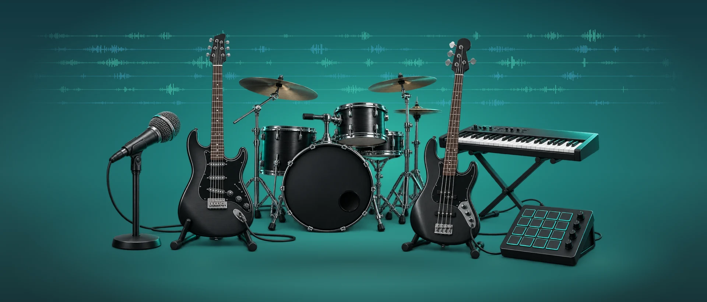
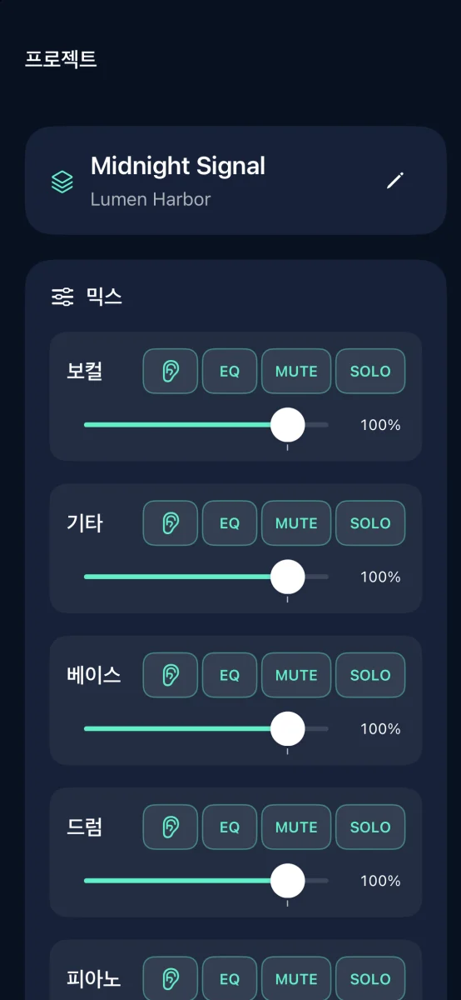
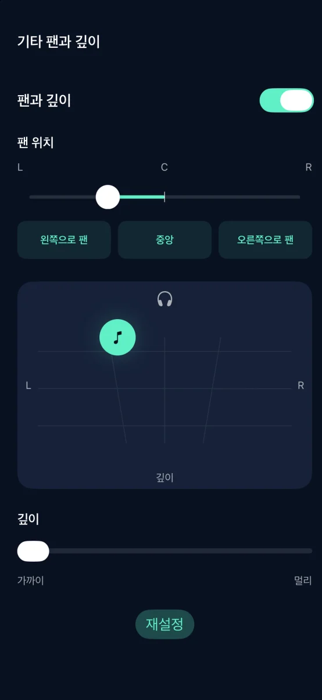
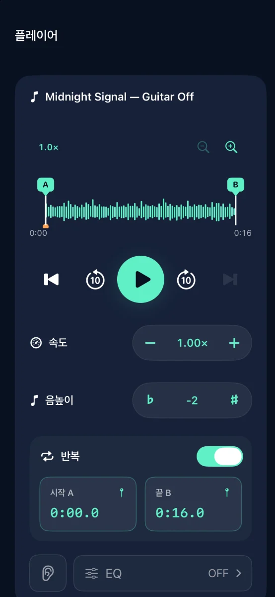

iPhone용 음원 분리 및 연습 앱

즐겨 듣는 곡을 연습용 반주로
곡을 6개 트랙으로 분리하고 내가 연주할 파트를 끄세요.
App Store 출시 예정

기능



iPhone용 음원 분리 및 연습 앱
오디오는 기기에서 분리됩니다. 계정이 필요하지 않습니다.
각 트랙의 음량, 음소거, 솔로, EQ, 팬과 깊이를 조정하세요. M4A, MP3 또는 WAV로 내보낼 수 있습니다.
분리에 성공한 3회까지 무료로 이용할 수 있습니다. 한 번 구매하면 횟수 제한 없이 분리할 수 있습니다. 구독은 필요 없습니다.
스트리밍 트랙이나 DRM으로 보호된 오디오는 가져올 수 없습니다. 사용 권한이 있는 오디오를 사용하세요.
도움말 및 지원 ↗